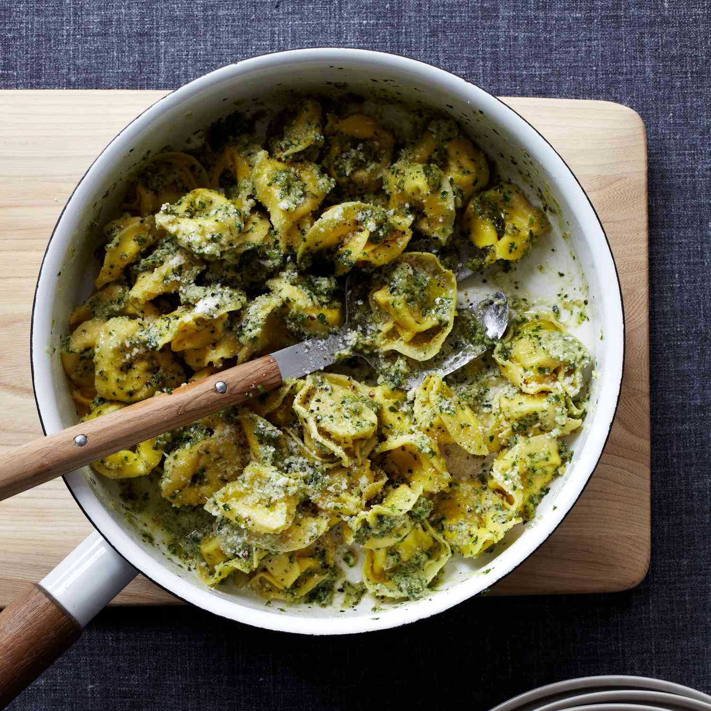

Tortellini with Pesto

Description
Here's one of the quickest pesto sauces you'll come across. It's a perfect match for cheese tortellini, but you can use other tortellini such as mushroom or meat instead. The pesto is also great with just about any plain pasta.
Ingridients
- 1 cup walnuts
- 1/3 cup of flat-leaf parsley
- 2 smashed garlic cloves
- 3 tablespoons grated Parmesan cheese
- 1/2 cup olive oil
- 1/2 teaspoon salt
- 1/4 teaspoon fresh-ground black pepper
- 1 pound fresh of cheese tortellini
- 1 tablespoon butter
Steps
- Step: In a food processor or blender, pulse the walnuts, parsley, garlic, Parmesan, oil, salt, and pepper to a coarse puree.
- Step: In a large pot of boiling, salted water, cook the tortellini until just done, about 4 minutes for fresh and 12 minutes for frozen. Reserve 1/2 cup of the pasta water. Drain the tortellini. Toss with 1/4 cup of the reserved pasta water, the walnut pesto, and the butter. If the pasta seems dry, add more of the reserved pasta water. Sprinkle with additional Parmesan and pass more at the table.
Notes
Add some sun-dried cherry tomatoes for extra fresh-sugary taste.
Click here to go home!